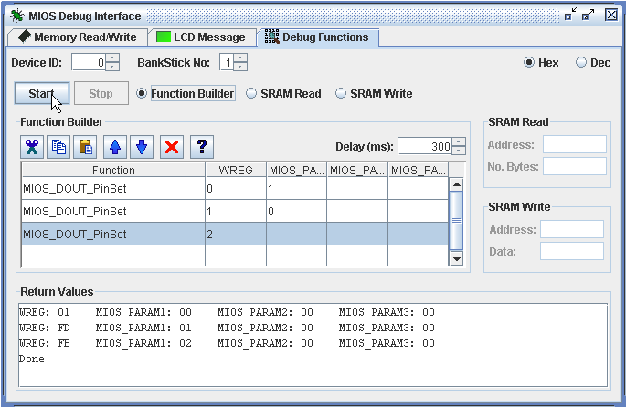
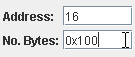
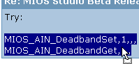
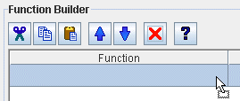
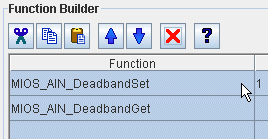
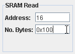

The MIOS Debug Interface consists of two tabs, the LCD Message tab and the Debug functions tab. Common to both are the Device ID and BankStick No spin boxes and the Hex/Dec view switch.
The Hex/Dec view switch will toggle between Hexadecimal (Base16) and Decimal (Base10) views for number input and display.
NOTE: When in Decimal view, Hex numbers can still be inputted by prefixing the numbers with either '0x' or '#':


The Function Builder table allows a number of fuctions to be strung together and grows in size as more rows are added. The WREG, MIOS_PARAM1, MIOS_PARAM2 and MIOS_PARAM3 columns allow parameters for each function to be specified. The format for specifying parameters for each function can be looked up by highlighting the appropriate row, and pressing the help button:

Rows can be re-ordered by using the up and down arrow buttons, or by highlighting the required rows and 'dragging and dropping'. Drag n Drop also works between the Function Builder table and external programs such as a text editor or web browser. This allows for programmers to save command strings in a comma delimited format, or share with others when trying to debug or troubleshoot problems:
|  |  |  |
Pressing the "Start" button will send the MIOS Debug functions from the Function Builder table, ordered from top to bottom with a delay in between each message as specified in the "Delay" spinbox. Return values will be displayed in the "Return Values" text area.
The SRAM Read facility allows the SRAM memory to be read using the debug-command 02. The byte address to start reading from is inputted in the Address field, and the number of bytes to read in the No. Bytes field. After pressing the "Start" button, the returned memory dump will be displayed in the "Return Values" text area.

The SRAM Write facility allows the SRAM memory to be written to using the debug-command 03. The byte address to write to is inputted in the Address field, and the data to write to memory in the Data field (only one value can be written at a time). Pressing the "Start" button will send the data to be written and if successfull, a write acknowledge message will be returned and displayed in the "Return Values" text area.